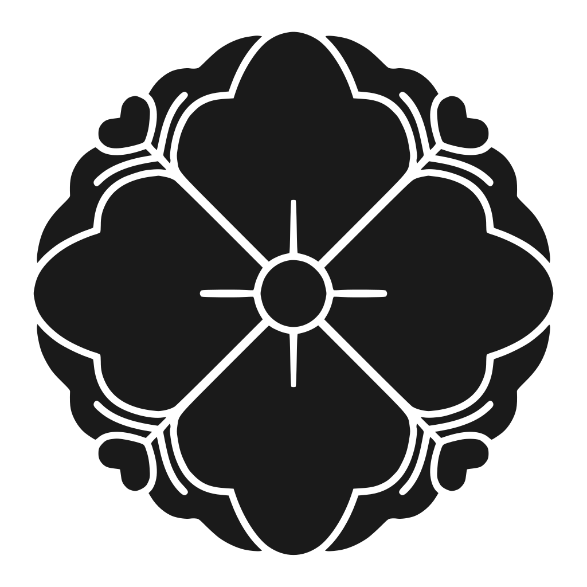
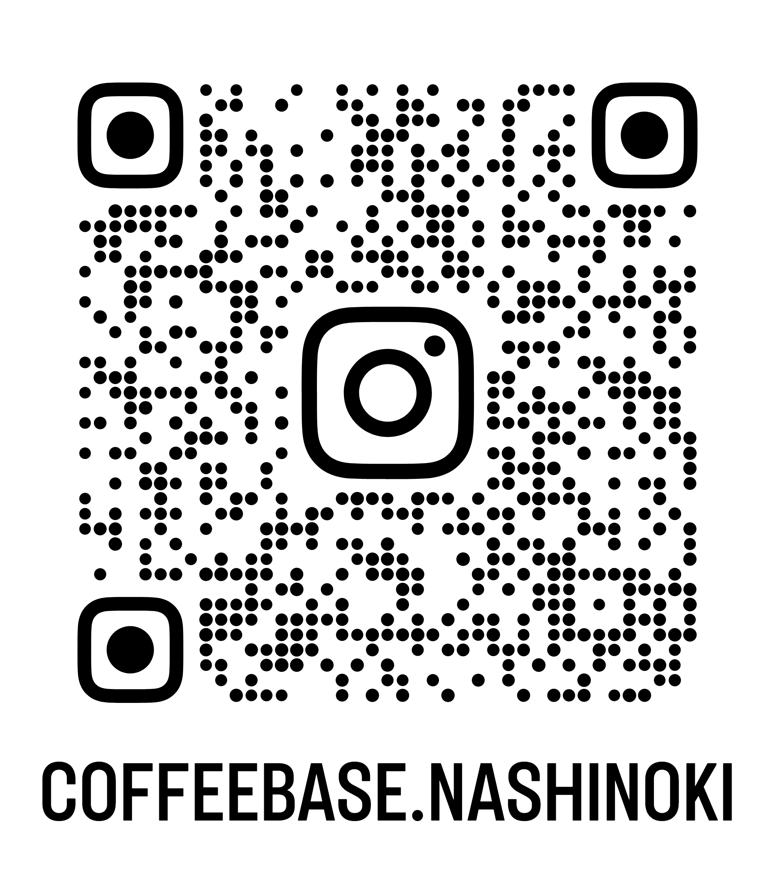

京の歴史と名水が、心を潤す。
CONCEPT
追われ続ける日常から、少しだけ離れてみませんか。
「Coffee Base NASHINOKI」があるのは、京都御所の東端に佇む梨木神社。
都会の喧騒を忘れさせる静寂のなかで、あなた自身を取り戻すための隠れ家です。
名水と建築の背景
STORY OF WATER & ARCHITECTURE

京都三名水「染井の水」と旧春興殿
唯一現存する名水「染井の水」のまろやかな口あたりと、大正期に宮中より移築された歴史的建築「旧春興殿」の温もり。その深い背景を紐解きます。
STORYページで詳しく見るあなたをいたわる、贅沢な時間。
コーヒーコース（完全予約制）
北山杉を贅沢に使用した静謐な特別室にて、完全予約制の「コーヒーコース」をご用意しております。 レストランのコース料理のように60分〜90分かけて、複数のコーヒーを順番にご提供。一種類の豆が抽出方法でどう表情を変えるか、京都の老舗和菓子とともに五感を澄まして味わっていただけます。
特別室コーヒーコースを予約するすっと身体にしみ入る、透明な一杯。
MENU
名水の個性を活かした水出しコーヒーや、その日の気分に寄り添うシングルオリジンのドリップ。今のあなたに合う一杯を見つける「豆診断」もご用意しています。
境内の静けさに身を委ねて
SPACE & ATMOSPHERE
いつでもここでは、あなたを急かすものはありません。木漏れ日の差す縁側や、風に揺れる境内の緑とともに、ただ心地よい時間をお過ごしください。


アクセス・店舗情報
ACCESS & INFO
京都御所のすぐ東側、静かな鳥居をくぐり、まっすぐな参道を進んだ左手にございます。少し疲れたときは、いつでもお気軽にお立ち寄りください。
NASHINOKI

営業時間：10:00〜17:00
住 所：京都府京都市上京区染殿町680 梨木神社境内
アクセス：京阪電車「神宮丸太町駅」より徒歩約15分
お知らせ・日々の空気感
INSTAGRAM & NEWS
境内の四季の移り変わりや、季節の和菓子、最新の豆の入荷情報はInstagramにて日々発信しています。
